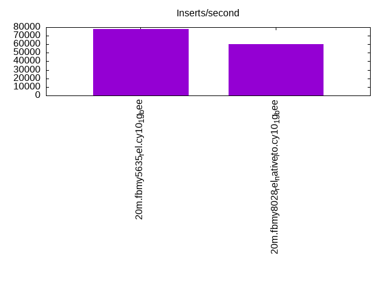
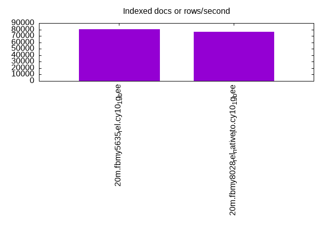
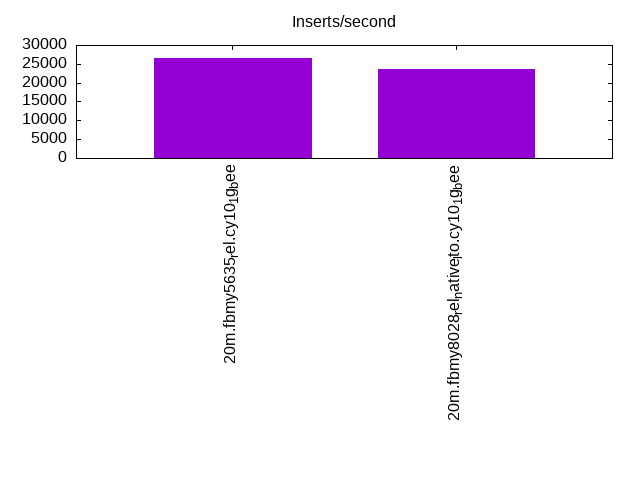
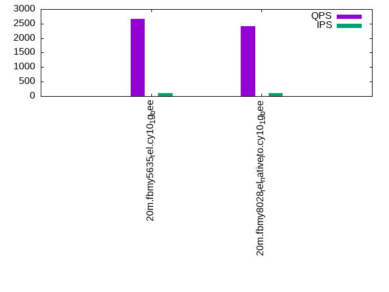
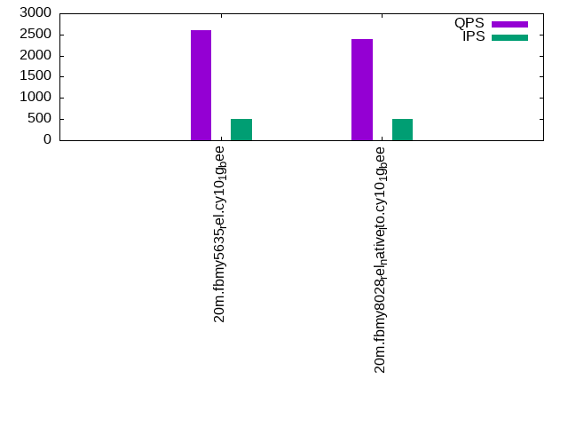
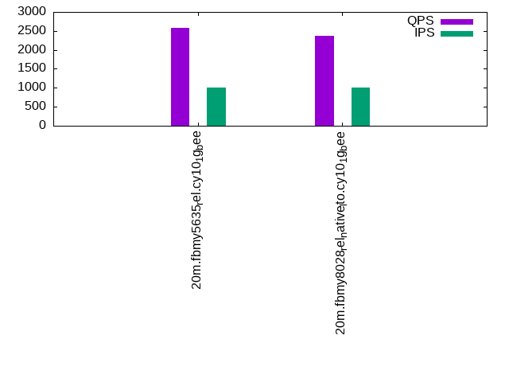

This is a report for the insert benchmark with 20M docs and 1 client(s). It is generated by scripts (bash, awk, sed) and Tufte might not be impressed. An overview of the insert benchmark is here and a short update is here. Below, by DBMS, I mean DBMS+version.config. An example is my8020.c10b40 where my means MySQL, 8020 is version 8.0.20 and c10b40 is the name for the configuration file.
The test server has 8 AMD cores, 16G RAM and an NVMe SSD. It is described here as the Beelink. The benchmark was run with 1 client and there were 1 or 3 connections per client (1 for queries or inserts without rate limits, 1+1 for rate limited inserts+deletes). It uses 1 table. It loads 20M rows per table without secondary indexes, creates secondary indexes, then inserts 50M rows per table with a delete per insert to avoid growing the table. It then does 3 read+write tests for 1800s each that do queries as fast as possible with 100, 500 and then 1000 inserts/second/client concurrent with the queries and 1000 deletes/second to avoid growing the table. The database is cached by the OS page cache but not by the storage engine. Clients and the DBMS share one server. The per-database configs are in the per-database subdirectories here.
The tested DBMS are:
The numbers are inserts/s for l.i0 and l.i1, indexed docs (or rows) /s for l.x and queries/s for q*.2. The values are the average rate over the entire test for inserts (IPS) and queries (QPS). The range of values for IPS and QPS is split into 3 parts: bottom 25%, middle 50%, top 25%. Values in the bottom 25% have a red background, values in the top 25% have a green background and values in the middle have no color. A gray background is used for values that can be ignored because the DBMS did not sustain the target insert rate. Red backgrounds are not used when the minimum value is within 80% of the max value.
| dbms | l.i0 | l.x | l.i1 | q100.1 | q500.1 | q1000.1 |
|---|---|---|---|---|---|---|
| 20m.fbmy5635_rel.cy10_1g_bee | 78125 | 80723 | 26652 | 2658 | 2607 | 2575 |
| 20m.fbmy8028_rel_native_lto.cy10_1g_bee | 60241 | 76136 | 23585 | 2407 | 2388 | 2378 |
This table has relative throughput, throughput for the DBMS relative to the DBMS in the first line, using the absolute throughput from the previous table.
| dbms | l.i0 | l.x | l.i1 | q100.1 | q500.1 | q1000.1 |
|---|---|---|---|---|---|---|
| 20m.fbmy5635_rel.cy10_1g_bee | 1.00 | 1.00 | 1.00 | 1.00 | 1.00 | 1.00 |
| 20m.fbmy8028_rel_native_lto.cy10_1g_bee | 0.77 | 0.94 | 0.88 | 0.91 | 0.92 | 0.92 |
This lists the average rate of inserts/s for the tests that do inserts concurrent with queries. For such tests the query rate is listed in the table above. The read+write tests are setup so that the insert rate should match the target rate every second. Cells that are not at least 95% of the target have a red background to indicate a failure to satisfy the target.
| dbms | q100.1 | q500.1 | q1000.1 |
|---|---|---|---|
| fbmy5635_rel.cy10_1g_bee | 100 | 498 | 997 |
| fbmy8028_rel_native_lto.cy10_1g_bee | 100 | 499 | 997 |
| target | 100 | 500 | 1000 |
l.i0: load without secondary indexes. Graphs for performance per 1-second interval are here.
Average throughput:
Insert response time histogram: each cell has the percentage of responses that take <= the time in the header and max is the max response time in seconds. For the max column values in the top 25% of the range have a red background and in the bottom 25% of the range have a green background. The red background is not used when the min value is within 80% of the max value.
| dbms | 256us | 1ms | 4ms | 16ms | 64ms | 256ms | 1s | 4s | 16s | gt | max |
|---|---|---|---|---|---|---|---|---|---|---|---|
| fbmy5635_rel.cy10_1g_bee | 99.870 | 0.126 | 0.005 | 0.061 | |||||||
| fbmy8028_rel_native_lto.cy10_1g_bee | 99.731 | 0.189 | 0.078 | 0.003 | 0.083 |
Performance metrics for the DBMS listed above. Some are normalized by throughput, others are not. Legend for results is here.
ips qps rps rmbps wps wmbps rpq rkbpq wpi wkbpi csps cpups cspq cpupq dbgb1 dbgb2 rss maxop p50 p99 tag 78125 0 0 0.0 36.4 13.3 0.000 0.000 0.000 0.174 7686 22.4 0.098 23 0.7 1.8 0.2 0.061 79010 72720 20m.fbmy5635_rel.cy10_1g_bee 60241 0 0 0.0 36.6 11.8 0.000 0.000 0.001 0.201 6290 21.5 0.104 29 0.7 1.9 0.6 0.083 60730 54338 20m.fbmy8028_rel_native_lto.cy10_1g_bee
l.x: create secondary indexes.
Average throughput:
Performance metrics for the DBMS listed above. Some are normalized by throughput, others are not. Legend for results is here.
ips qps rps rmbps wps wmbps rpq rkbpq wpi wkbpi csps cpups cspq cpupq dbgb1 dbgb2 rss maxop p50 p99 tag 80723 0 0 0.0 32.0 12.2 0.000 0.000 0.000 0.155 257 11.5 0.003 11 1.5 2.5 1.3 0.009 NA NA 20m.fbmy5635_rel.cy10_1g_bee 76136 0 0 0.0 29.2 11.5 0.000 0.000 0.000 0.155 396 11.6 0.005 12 1.4 2.7 1.8 0.009 NA NA 20m.fbmy8028_rel_native_lto.cy10_1g_bee
l.i1: continue load after secondary indexes created. Graphs for performance per 1-second interval are here.
Average throughput:
Insert response time histogram: each cell has the percentage of responses that take <= the time in the header and max is the max response time in seconds. For the max column values in the top 25% of the range have a red background and in the bottom 25% of the range have a green background. The red background is not used when the min value is within 80% of the max value.
| dbms | 256us | 1ms | 4ms | 16ms | 64ms | 256ms | 1s | 4s | 16s | gt | max |
|---|---|---|---|---|---|---|---|---|---|---|---|
| fbmy5635_rel.cy10_1g_bee | 99.805 | 0.190 | 0.003 | 0.002 | 0.110 | ||||||
| fbmy8028_rel_native_lto.cy10_1g_bee | 99.680 | 0.245 | 0.072 | 0.003 | 0.123 |
Delete response time histogram: each cell has the percentage of responses that take <= the time in the header and max is the max response time in seconds. For the max column values in the top 25% of the range have a red background and in the bottom 25% of the range have a green background. The red background is not used when the min value is within 80% of the max value.
| dbms | 256us | 1ms | 4ms | 16ms | 64ms | 256ms | 1s | 4s | 16s | gt | max |
|---|---|---|---|---|---|---|---|---|---|---|---|
| fbmy5635_rel.cy10_1g_bee | 99.797 | 0.193 | 0.008 | 0.002 | 0.110 | ||||||
| fbmy8028_rel_native_lto.cy10_1g_bee | 99.673 | 0.246 | 0.078 | 0.003 | 0.106 |
Performance metrics for the DBMS listed above. Some are normalized by throughput, others are not. Legend for results is here.
ips qps rps rmbps wps wmbps rpq rkbpq wpi wkbpi csps cpups cspq cpupq dbgb1 dbgb2 rss maxop p50 p99 tag 26652 0 3 0.4 101.1 39.5 0.000 0.015 0.004 1.518 11205 44.2 0.420 133 2.3 4.1 1.4 0.110 26620 23874 20m.fbmy5635_rel.cy10_1g_bee 23585 0 3 0.3 97.4 36.6 0.000 0.015 0.004 1.587 10204 43.4 0.433 147 2.5 4.5 1.8 0.123 23574 21127 20m.fbmy8028_rel_native_lto.cy10_1g_bee
q100.1: range queries with 100 insert/s per client. Graphs for performance per 1-second interval are here.
Average throughput:
Query response time histogram: each cell has the percentage of responses that take <= the time in the header and max is the max response time in seconds. For max values in the top 25% of the range have a red background and in the bottom 25% of the range have a green background. The red background is not used when the min value is within 80% of the max value.
| dbms | 256us | 1ms | 4ms | 16ms | 64ms | 256ms | 1s | 4s | 16s | gt | max |
|---|---|---|---|---|---|---|---|---|---|---|---|
| fbmy5635_rel.cy10_1g_bee | 1.742 | 98.258 | 0.001 | nonzero | 0.005 | ||||||
| fbmy8028_rel_native_lto.cy10_1g_bee | 2.422 | 97.576 | 0.002 | 0.003 |
Insert response time histogram: each cell has the percentage of responses that take <= the time in the header and max is the max response time in seconds. For max values in the top 25% of the range have a red background and in the bottom 25% of the range have a green background. The red background is not used when the min value is within 80% of the max value.
| dbms | 256us | 1ms | 4ms | 16ms | 64ms | 256ms | 1s | 4s | 16s | gt | max |
|---|---|---|---|---|---|---|---|---|---|---|---|
| fbmy5635_rel.cy10_1g_bee | 99.611 | 0.389 | 0.009 | ||||||||
| fbmy8028_rel_native_lto.cy10_1g_bee | 99.417 | 0.500 | 0.083 | 0.018 |
Delete response time histogram: each cell has the percentage of responses that take <= the time in the header and max is the max response time in seconds. For max values in the top 25% of the range have a red background and in the bottom 25% of the range have a green background. The red background is not used when the min value is within 80% of the max value.
| dbms | 256us | 1ms | 4ms | 16ms | 64ms | 256ms | 1s | 4s | 16s | gt | max |
|---|---|---|---|---|---|---|---|---|---|---|---|
| fbmy5635_rel.cy10_1g_bee | 99.667 | 0.333 | 0.008 | ||||||||
| fbmy8028_rel_native_lto.cy10_1g_bee | 99.528 | 0.417 | 0.056 | 0.018 |
Performance metrics for the DBMS listed above. Some are normalized by throughput, others are not. Legend for results is here.
ips qps rps rmbps wps wmbps rpq rkbpq wpi wkbpi csps cpups cspq cpupq dbgb1 dbgb2 rss maxop p50 p99 tag 100 2658 0 0.0 4.7 0.5 0.000 0.000 0.047 5.651 10310 12.9 3.879 388 1.7 3.6 1.5 0.005 2685 2269 20m.fbmy5635_rel.cy10_1g_bee 100 2407 0 0.0 4.4 0.5 0.000 0.000 0.044 4.790 9507 12.8 3.950 425 1.7 3.7 1.9 0.003 2381 2094 20m.fbmy8028_rel_native_lto.cy10_1g_bee
q500.1: range queries with 500 insert/s per client. Graphs for performance per 1-second interval are here.
Average throughput:
Query response time histogram: each cell has the percentage of responses that take <= the time in the header and max is the max response time in seconds. For max values in the top 25% of the range have a red background and in the bottom 25% of the range have a green background. The red background is not used when the min value is within 80% of the max value.
| dbms | 256us | 1ms | 4ms | 16ms | 64ms | 256ms | 1s | 4s | 16s | gt | max |
|---|---|---|---|---|---|---|---|---|---|---|---|
| fbmy5635_rel.cy10_1g_bee | 1.173 | 98.826 | 0.001 | nonzero | 0.005 | ||||||
| fbmy8028_rel_native_lto.cy10_1g_bee | 1.823 | 98.176 | 0.001 | 0.003 |
Insert response time histogram: each cell has the percentage of responses that take <= the time in the header and max is the max response time in seconds. For max values in the top 25% of the range have a red background and in the bottom 25% of the range have a green background. The red background is not used when the min value is within 80% of the max value.
| dbms | 256us | 1ms | 4ms | 16ms | 64ms | 256ms | 1s | 4s | 16s | gt | max |
|---|---|---|---|---|---|---|---|---|---|---|---|
| fbmy5635_rel.cy10_1g_bee | 99.739 | 0.261 | 0.010 | ||||||||
| fbmy8028_rel_native_lto.cy10_1g_bee | 99.533 | 0.383 | 0.083 | 0.023 |
Delete response time histogram: each cell has the percentage of responses that take <= the time in the header and max is the max response time in seconds. For max values in the top 25% of the range have a red background and in the bottom 25% of the range have a green background. The red background is not used when the min value is within 80% of the max value.
| dbms | 256us | 1ms | 4ms | 16ms | 64ms | 256ms | 1s | 4s | 16s | gt | max |
|---|---|---|---|---|---|---|---|---|---|---|---|
| fbmy5635_rel.cy10_1g_bee | 99.728 | 0.272 | 0.009 | ||||||||
| fbmy8028_rel_native_lto.cy10_1g_bee | 99.578 | 0.344 | 0.078 | 0.022 |
Performance metrics for the DBMS listed above. Some are normalized by throughput, others are not. Legend for results is here.
ips qps rps rmbps wps wmbps rpq rkbpq wpi wkbpi csps cpups cspq cpupq dbgb1 dbgb2 rss maxop p50 p99 tag 498 2607 0 0.0 5.5 0.9 0.000 0.000 0.011 1.950 10221 13.5 3.921 414 1.7 1.7 1.5 0.005 2605 2413 20m.fbmy5635_rel.cy10_1g_bee 499 2388 0 0.0 4.9 0.7 0.000 0.000 0.010 1.468 9537 13.7 3.994 459 1.7 2.0 1.8 0.003 2365 2189 20m.fbmy8028_rel_native_lto.cy10_1g_bee
q1000.1: range queries with 1000 insert/s per client. Graphs for performance per 1-second interval are here.
Average throughput:
Query response time histogram: each cell has the percentage of responses that take <= the time in the header and max is the max response time in seconds. For max values in the top 25% of the range have a red background and in the bottom 25% of the range have a green background. The red background is not used when the min value is within 80% of the max value.
| dbms | 256us | 1ms | 4ms | 16ms | 64ms | 256ms | 1s | 4s | 16s | gt | max |
|---|---|---|---|---|---|---|---|---|---|---|---|
| fbmy5635_rel.cy10_1g_bee | 1.454 | 98.546 | 0.001 | 0.002 | |||||||
| fbmy8028_rel_native_lto.cy10_1g_bee | 1.792 | 98.207 | 0.001 | 0.003 |
Insert response time histogram: each cell has the percentage of responses that take <= the time in the header and max is the max response time in seconds. For max values in the top 25% of the range have a red background and in the bottom 25% of the range have a green background. The red background is not used when the min value is within 80% of the max value.
| dbms | 256us | 1ms | 4ms | 16ms | 64ms | 256ms | 1s | 4s | 16s | gt | max |
|---|---|---|---|---|---|---|---|---|---|---|---|
| fbmy5635_rel.cy10_1g_bee | 99.717 | 0.281 | 0.003 | 0.048 | |||||||
| fbmy8028_rel_native_lto.cy10_1g_bee | 99.569 | 0.339 | 0.092 | 0.048 |
Delete response time histogram: each cell has the percentage of responses that take <= the time in the header and max is the max response time in seconds. For max values in the top 25% of the range have a red background and in the bottom 25% of the range have a green background. The red background is not used when the min value is within 80% of the max value.
| dbms | 256us | 1ms | 4ms | 16ms | 64ms | 256ms | 1s | 4s | 16s | gt | max |
|---|---|---|---|---|---|---|---|---|---|---|---|
| fbmy5635_rel.cy10_1g_bee | 99.711 | 0.286 | 0.003 | 0.048 | |||||||
| fbmy8028_rel_native_lto.cy10_1g_bee | 99.597 | 0.314 | 0.089 | 0.063 |
Performance metrics for the DBMS listed above. Some are normalized by throughput, others are not. Legend for results is here.
ips qps rps rmbps wps wmbps rpq rkbpq wpi wkbpi csps cpups cspq cpupq dbgb1 dbgb2 rss maxop p50 p99 tag 997 2575 0 0.0 6.7 1.4 0.000 0.000 0.007 1.464 10294 14.5 3.997 450 1.8 2.2 1.5 0.002 2572 2397 20m.fbmy5635_rel.cy10_1g_bee 997 2378 0 0.0 8.2 1.9 0.000 0.000 0.008 1.973 9703 15.1 4.080 508 1.8 2.4 1.9 0.003 2349 2189 20m.fbmy8028_rel_native_lto.cy10_1g_bee
l.i0: load without secondary indexes
Performance metrics for all DBMS, not just the ones listed above. Some are normalized by throughput, others are not. Legend for results is here.
ips qps rps rmbps wps wmbps rpq rkbpq wpi wkbpi csps cpups cspq cpupq dbgb1 dbgb2 rss maxop p50 p99 tag 78125 0 0 0.0 36.4 13.3 0.000 0.000 0.000 0.174 7686 22.4 0.098 23 0.7 1.8 0.2 0.061 79010 72720 20m.fbmy5635_rel.cy10_1g_bee 60241 0 0 0.0 36.6 11.8 0.000 0.000 0.001 0.201 6290 21.5 0.104 29 0.7 1.9 0.6 0.083 60730 54338 20m.fbmy8028_rel_native_lto.cy10_1g_bee
l.x: create secondary indexes
Performance metrics for all DBMS, not just the ones listed above. Some are normalized by throughput, others are not. Legend for results is here.
ips qps rps rmbps wps wmbps rpq rkbpq wpi wkbpi csps cpups cspq cpupq dbgb1 dbgb2 rss maxop p50 p99 tag 80723 0 0 0.0 32.0 12.2 0.000 0.000 0.000 0.155 257 11.5 0.003 11 1.5 2.5 1.3 0.009 NA NA 20m.fbmy5635_rel.cy10_1g_bee 76136 0 0 0.0 29.2 11.5 0.000 0.000 0.000 0.155 396 11.6 0.005 12 1.4 2.7 1.8 0.009 NA NA 20m.fbmy8028_rel_native_lto.cy10_1g_bee
l.i1: continue load after secondary indexes created
Performance metrics for all DBMS, not just the ones listed above. Some are normalized by throughput, others are not. Legend for results is here.
ips qps rps rmbps wps wmbps rpq rkbpq wpi wkbpi csps cpups cspq cpupq dbgb1 dbgb2 rss maxop p50 p99 tag 26652 0 3 0.4 101.1 39.5 0.000 0.015 0.004 1.518 11205 44.2 0.420 133 2.3 4.1 1.4 0.110 26620 23874 20m.fbmy5635_rel.cy10_1g_bee 23585 0 3 0.3 97.4 36.6 0.000 0.015 0.004 1.587 10204 43.4 0.433 147 2.5 4.5 1.8 0.123 23574 21127 20m.fbmy8028_rel_native_lto.cy10_1g_bee
q100.1: range queries with 100 insert/s per client
Performance metrics for all DBMS, not just the ones listed above. Some are normalized by throughput, others are not. Legend for results is here.
ips qps rps rmbps wps wmbps rpq rkbpq wpi wkbpi csps cpups cspq cpupq dbgb1 dbgb2 rss maxop p50 p99 tag 100 2658 0 0.0 4.7 0.5 0.000 0.000 0.047 5.651 10310 12.9 3.879 388 1.7 3.6 1.5 0.005 2685 2269 20m.fbmy5635_rel.cy10_1g_bee 100 2407 0 0.0 4.4 0.5 0.000 0.000 0.044 4.790 9507 12.8 3.950 425 1.7 3.7 1.9 0.003 2381 2094 20m.fbmy8028_rel_native_lto.cy10_1g_bee
q500.1: range queries with 500 insert/s per client
Performance metrics for all DBMS, not just the ones listed above. Some are normalized by throughput, others are not. Legend for results is here.
ips qps rps rmbps wps wmbps rpq rkbpq wpi wkbpi csps cpups cspq cpupq dbgb1 dbgb2 rss maxop p50 p99 tag 498 2607 0 0.0 5.5 0.9 0.000 0.000 0.011 1.950 10221 13.5 3.921 414 1.7 1.7 1.5 0.005 2605 2413 20m.fbmy5635_rel.cy10_1g_bee 499 2388 0 0.0 4.9 0.7 0.000 0.000 0.010 1.468 9537 13.7 3.994 459 1.7 2.0 1.8 0.003 2365 2189 20m.fbmy8028_rel_native_lto.cy10_1g_bee
q1000.1: range queries with 1000 insert/s per client
Performance metrics for all DBMS, not just the ones listed above. Some are normalized by throughput, others are not. Legend for results is here.
ips qps rps rmbps wps wmbps rpq rkbpq wpi wkbpi csps cpups cspq cpupq dbgb1 dbgb2 rss maxop p50 p99 tag 997 2575 0 0.0 6.7 1.4 0.000 0.000 0.007 1.464 10294 14.5 3.997 450 1.8 2.2 1.5 0.002 2572 2397 20m.fbmy5635_rel.cy10_1g_bee 997 2378 0 0.0 8.2 1.9 0.000 0.000 0.008 1.973 9703 15.1 4.080 508 1.8 2.4 1.9 0.003 2349 2189 20m.fbmy8028_rel_native_lto.cy10_1g_bee
Insert response time histogram
256us 1ms 4ms 16ms 64ms 256ms 1s 4s 16s gt max tag 0.000 0.000 99.870 0.126 0.005 0.000 0.000 0.000 0.000 0.000 0.061 fbmy5635_rel.cy10_1g_bee 0.000 0.000 99.731 0.189 0.078 0.003 0.000 0.000 0.000 0.000 0.083 fbmy8028_rel_native_lto.cy10_1g_bee
TODO - determine whether there is data for create index response time
Insert response time histogram
256us 1ms 4ms 16ms 64ms 256ms 1s 4s 16s gt max tag 0.000 0.000 99.805 0.190 0.003 0.002 0.000 0.000 0.000 0.000 0.110 fbmy5635_rel.cy10_1g_bee 0.000 0.000 99.680 0.245 0.072 0.003 0.000 0.000 0.000 0.000 0.123 fbmy8028_rel_native_lto.cy10_1g_bee
Delete response time histogram
256us 1ms 4ms 16ms 64ms 256ms 1s 4s 16s gt max tag 0.000 0.000 99.797 0.193 0.008 0.002 0.000 0.000 0.000 0.000 0.110 fbmy5635_rel.cy10_1g_bee 0.000 0.000 99.673 0.246 0.078 0.003 0.000 0.000 0.000 0.000 0.106 fbmy8028_rel_native_lto.cy10_1g_bee
Query response time histogram
256us 1ms 4ms 16ms 64ms 256ms 1s 4s 16s gt max tag 1.742 98.258 0.001 nonzero 0.000 0.000 0.000 0.000 0.000 0.000 0.005 fbmy5635_rel.cy10_1g_bee 2.422 97.576 0.002 0.000 0.000 0.000 0.000 0.000 0.000 0.000 0.003 fbmy8028_rel_native_lto.cy10_1g_bee
Insert response time histogram
256us 1ms 4ms 16ms 64ms 256ms 1s 4s 16s gt max tag 0.000 0.000 99.611 0.389 0.000 0.000 0.000 0.000 0.000 0.000 0.009 fbmy5635_rel.cy10_1g_bee 0.000 0.000 99.417 0.500 0.083 0.000 0.000 0.000 0.000 0.000 0.018 fbmy8028_rel_native_lto.cy10_1g_bee
Delete response time histogram
256us 1ms 4ms 16ms 64ms 256ms 1s 4s 16s gt max tag 0.000 0.000 99.667 0.333 0.000 0.000 0.000 0.000 0.000 0.000 0.008 fbmy5635_rel.cy10_1g_bee 0.000 0.000 99.528 0.417 0.056 0.000 0.000 0.000 0.000 0.000 0.018 fbmy8028_rel_native_lto.cy10_1g_bee
Query response time histogram
256us 1ms 4ms 16ms 64ms 256ms 1s 4s 16s gt max tag 1.173 98.826 0.001 nonzero 0.000 0.000 0.000 0.000 0.000 0.000 0.005 fbmy5635_rel.cy10_1g_bee 1.823 98.176 0.001 0.000 0.000 0.000 0.000 0.000 0.000 0.000 0.003 fbmy8028_rel_native_lto.cy10_1g_bee
Insert response time histogram
256us 1ms 4ms 16ms 64ms 256ms 1s 4s 16s gt max tag 0.000 0.000 99.739 0.261 0.000 0.000 0.000 0.000 0.000 0.000 0.010 fbmy5635_rel.cy10_1g_bee 0.000 0.000 99.533 0.383 0.083 0.000 0.000 0.000 0.000 0.000 0.023 fbmy8028_rel_native_lto.cy10_1g_bee
Delete response time histogram
256us 1ms 4ms 16ms 64ms 256ms 1s 4s 16s gt max tag 0.000 0.000 99.728 0.272 0.000 0.000 0.000 0.000 0.000 0.000 0.009 fbmy5635_rel.cy10_1g_bee 0.000 0.000 99.578 0.344 0.078 0.000 0.000 0.000 0.000 0.000 0.022 fbmy8028_rel_native_lto.cy10_1g_bee
Query response time histogram
256us 1ms 4ms 16ms 64ms 256ms 1s 4s 16s gt max tag 1.454 98.546 0.001 0.000 0.000 0.000 0.000 0.000 0.000 0.000 0.002 fbmy5635_rel.cy10_1g_bee 1.792 98.207 0.001 0.000 0.000 0.000 0.000 0.000 0.000 0.000 0.003 fbmy8028_rel_native_lto.cy10_1g_bee
Insert response time histogram
256us 1ms 4ms 16ms 64ms 256ms 1s 4s 16s gt max tag 0.000 0.000 99.717 0.281 0.003 0.000 0.000 0.000 0.000 0.000 0.048 fbmy5635_rel.cy10_1g_bee 0.000 0.000 99.569 0.339 0.092 0.000 0.000 0.000 0.000 0.000 0.048 fbmy8028_rel_native_lto.cy10_1g_bee
Delete response time histogram
256us 1ms 4ms 16ms 64ms 256ms 1s 4s 16s gt max tag 0.000 0.000 99.711 0.286 0.003 0.000 0.000 0.000 0.000 0.000 0.048 fbmy5635_rel.cy10_1g_bee 0.000 0.000 99.597 0.314 0.089 0.000 0.000 0.000 0.000 0.000 0.063 fbmy8028_rel_native_lto.cy10_1g_bee